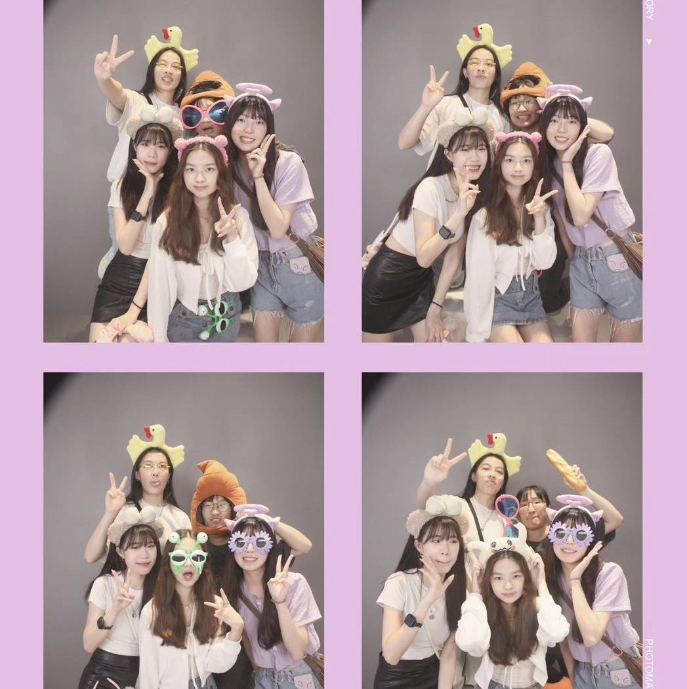
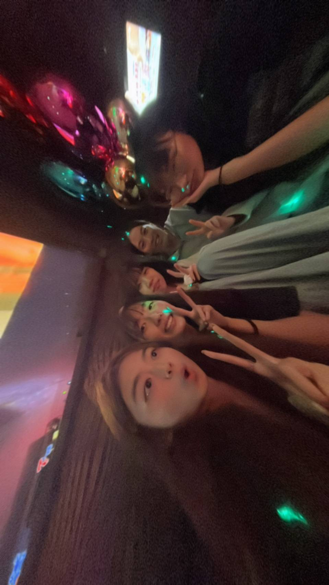
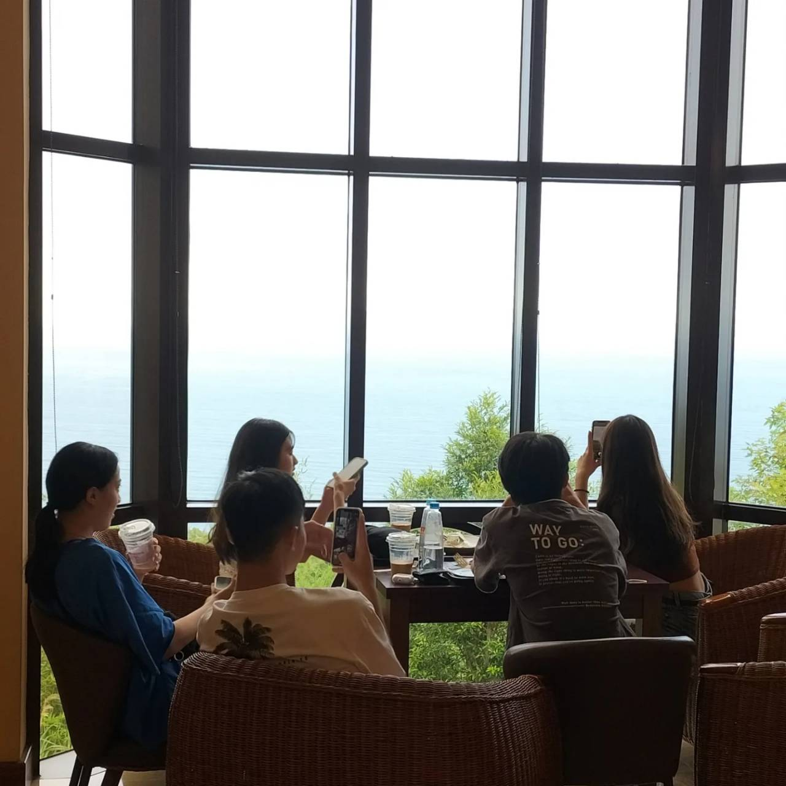
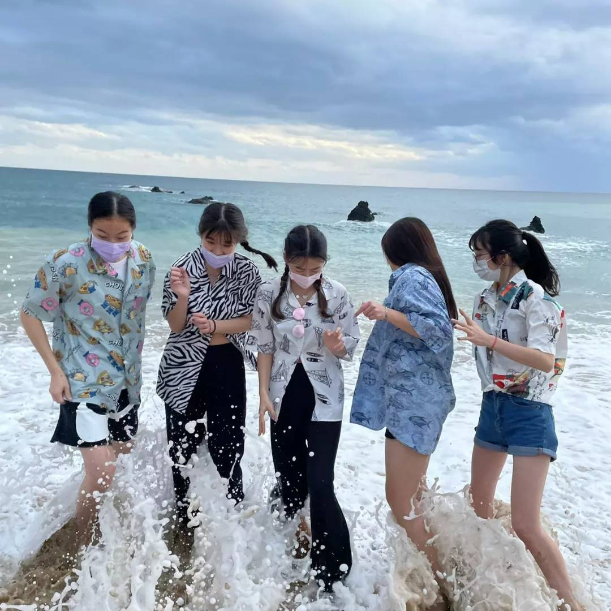
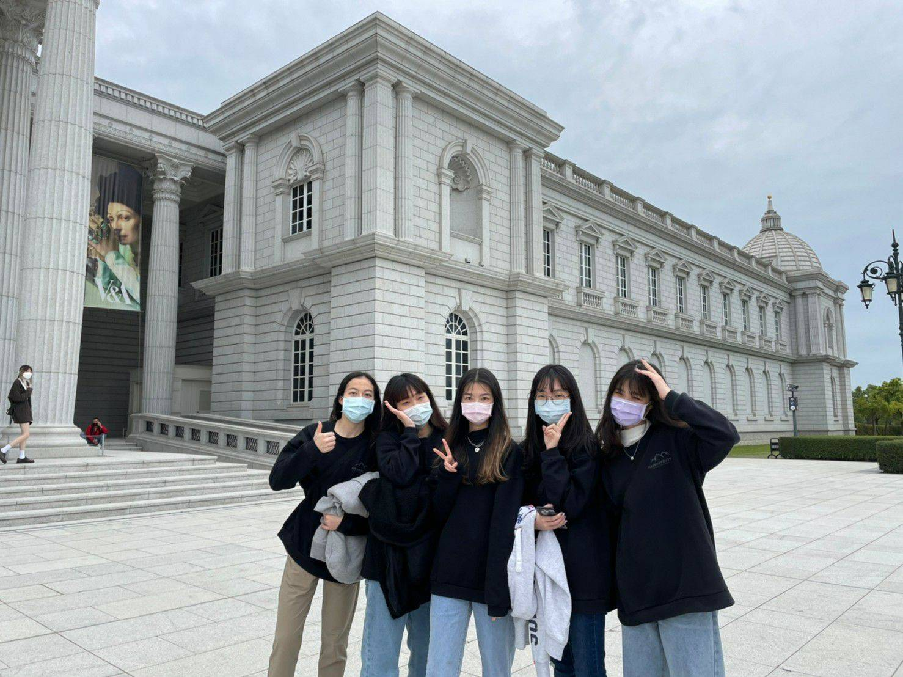
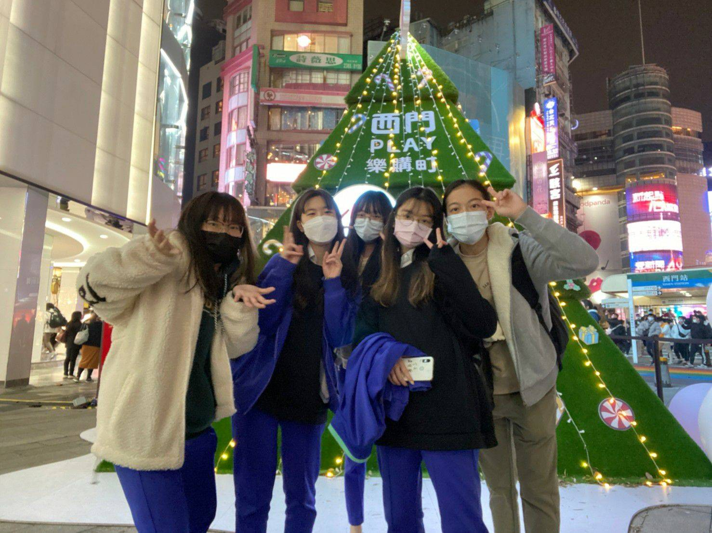
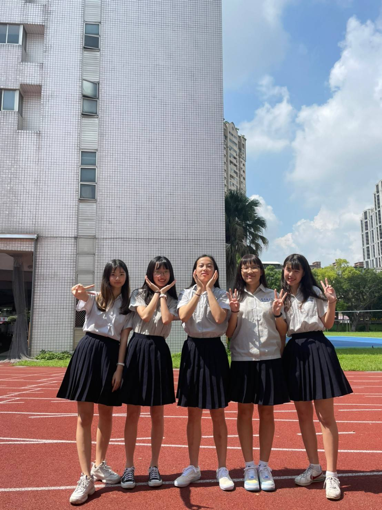

朋友介紹
我的bestie
| 姓名 | 綽號 | 星座 | 高中班級 |
|---|
| 陳思齊 | 小蘋果 | 獅子座 | 303 |
| 張育瑄 | 猴猴 | 金牛座 |
| 劉斯羽 | kiwi | 射手座 |
| 蔡沐軒 | 蔡奶呆 | 處女座 |
| 蕭妤帆 | 蕭魚販 | 水瓶座 |
| last update=2024/05/012 |
我們五個

我們的回憶
2024/04/05第一次全部人到齊去夜唱

2023/02/23跟蔡沐軒第一次去現場看劉斯羽打籃球
2022/07/21我第一次一起跟他們出去玩(這是我最喜歡的一張照片)

2022/02/15畢旅墾丁海邊 希望我們像這張照片一樣永遠開心

2022/02/14一起去畢旅

2021/12/30一起吃跨年餐

2021/09/16拍畢業照

留言板